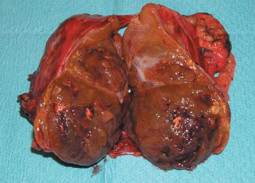
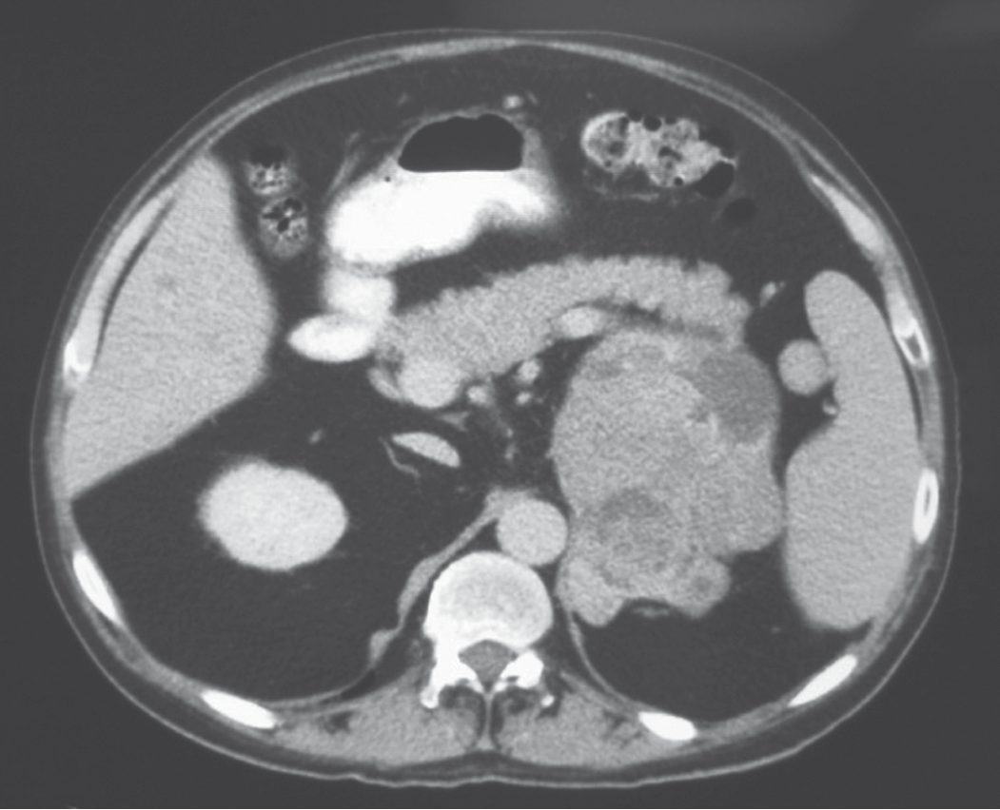
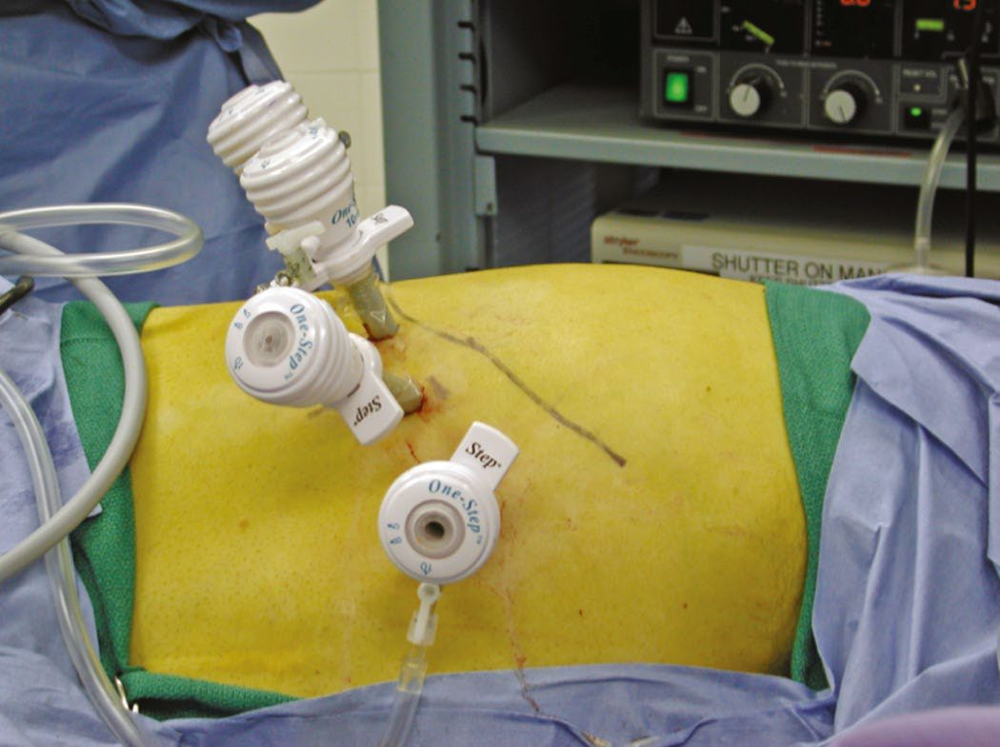
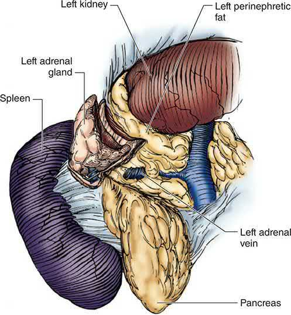

Adrenal Tumors
Summary
- Adrenal tumours range from incidentally discovered non-functioning adenomas to hormonally active tumours (Cushing's syndrome, Conn's syndrome/primary hyperaldosteronism, phaeochromocytoma) and rare adrenocortical carcinoma (ACC) [1][2].
- The key questions in any adrenal mass are whether it is functioning, whether it is malignant, and whether resection is indicated [1].
- Diagnosis follows a stepwise biochemical-then-radiological approach, and minimally invasive adrenalectomy is now standard for most benign and functioning tumours, with open surgery reserved for large or invasive disease [1][2][3].
- There is no NICE guidance of any kind on adrenal disease.
- NICE's conditions-and-diseases index has no adrenal topic, and there is no NICE guideline, technology appraisal or HealthTech guidance on adrenalectomy, phaeochromocytoma, primary aldosteronism, Cushing's syndrome or adrenocortical carcinoma.
- This is not an oversight in the reading, it is the position, and it means that a UK trainee has no NICE document to quote on any adrenal operation.
Two UK sources fill part of the gap. NICE NG136 (hypertension in adults) touches adrenal disease only at its edges, and one of its silences is clinically important (see Diagnosis below) [4]. The BAETS UKRETS Sixth National Audit Report 2021 is the UK national registry of adrenal surgery and supplies volume, approach and outcome data that no textbook carries [5].
Definition
- An adrenal incidentaloma is an asymptomatic adrenal mass discovered by chance on imaging performed for a non-adrenal indication [1][2].
- Their existence as a clinical entity is a by-product of advanced imaging: they were first described in the early 1980s as CT scanners became prevalent, and have become common as CT and MRI use has spread [3].
- Cushing's syndrome refers to any cause of hypercortisolism, whether from a pituitary ACTH-secreting adenoma (Cushing's disease), ectopic ACTH secretion, exogenous steroid administration, or autonomous adrenal cortisol secretion [1][6].
- Cushing's disease refers only to an ACTH-secreting adenoma of the pituitary gland [6].
- Conn's syndrome (primary hyperaldosteronism) is a heterogeneous group of disorders characterised by hypertension and inappropriately raised plasma aldosterone, the unregulated release of excess aldosterone from one or both adrenal glands, first described by Jerome Conn in 1954 [1][3].
- Phaeochromocytomas arise from neuroectodermal tissue of the adrenal medulla; tumours from extra-adrenal sympathetic or parasympathetic ganglia are paragangliomas, and together they are termed PPGL [1].
- The name records the histochemistry: these tumours stained brown when treated with chromium salts, and the characteristic positive chromaffin reaction gave them the name phaeochromocytoma, dusky-coloured tumour, from the Greek phaios [3].
- Adrenocortical carcinoma is a rare, aggressive malignancy arising from the adrenal cortex [1].
Mild autonomous cortisol secretion has replaced the term subclinical Cushing syndrome: patients typically have an incidentally discovered adrenal mass and biochemical evidence of cortisol hypersecretion without overt signs or symptoms, and a serum cortisol above 50 nmol/L (1.8 µg/dL) after a 1-mg dexamethasone suppression test is considered consistent with it in the absence of overt hypercortisolism [3].
Pathophysiology
- The adrenal cortex (90% of the gland) is zonally arranged: the outer zona glomerulosa secretes aldosterone, the largest zone at 70%, the zona fasciculata, secretes cortisol, and the inner zona reticularis secretes androgens, the mnemonic GFR maps to salt, sugar, sex steroids [1][7].
- Aldosterone secretion is regulated chiefly by the renin–angiotensin system and serum potassium; cortisol secretion is regulated by ACTH under hypothalamic CRH control with negative feedback [1].
- The adrenal medulla, derived from neural-crest ectodermal chromaffin cells, synthesises catecholamines, predominantly adrenaline (80%) via the enzyme PNMT, which is exclusive to the adrenal medulla, extra-adrenal paraganglia cannot produce adrenaline [1][7].
Primary aldosteronism
Primary hyperaldosteronism is caused by an aldosterone-producing adenoma (30–40% of cases; the 'canary tumour', typically 10–20 mm and often KCNJ5-mutated), bilateral (idiopathic) adrenal hyperplasia, unilateral hyperplasia, adrenocortical carcinoma, or rare familial hyperaldosteronism types I–IV [1]. The relative proportions depend heavily on how patients are selected for testing, which is the most important thing to know about the epidemiology [3]:
| Cause | Under selective screening | Under non-selective screening |
|---|---|---|
| Aldosterone-producing adenoma | 60% | 30% |
| Bilateral adrenal hyperplasia (idiopathic hyperaldosteronism) | 35% | 65% |
| Aldosterone-producing adrenocortical carcinoma | Under 1% | Under 1% |
| Familial hyperaldosteronism type I (glucocorticoid-remediable) | Under 1% | Under 1% |
| Familial hyperaldosteronism type II (non-glucocorticoid-remediable) | Under 1% | Under 1% |
- Table reformats the causes of primary aldosteronism by screening pattern [3].
- In the past, aldosteronoma was present in more than 60% of cases, but that number has fallen substantially as non-selective screening with the aldosterone-to-renin ratio has been applied, probably reflecting increased detection of hyperplasia, which has milder biochemistry [3].
- Non-selective use of the ratio significantly decreases the fraction of patients with surgically correctable disease, although the absolute number of surgically treatable cases has increased [3].
- Recent sequencing has revealed somatic mutations in genes coding for ion channels and ATPase in 94% of aldosterone-producing adenomas [3].
Cushing's syndrome
Cushing's syndrome due to adrenal pathology is most often an adrenocortical adenoma, less commonly bilateral macronodular adrenal hyperplasia or adrenocortical carcinoma; ACTH-secreting pituitary tumours cause 70–80% of all Cushing's syndrome and ectopic ACTH, for example from small-cell lung cancer, causes about 10% [1]. In ACTH-independent disease specifically, the underlying pathology is a solitary adrenal adenoma in approximately 90%, adrenocortical carcinoma in under 10%, and bilateral micronodular or macronodular hyperplasia in under 1%; almost all of these except micronodular hyperplasia are readily apparent on CT [3].
Phaeochromocytoma and paraganglioma
- PPGL is sporadic in about 70% of cases; the remainder occur within hereditary syndromes, MEN2, von Hippel–Lindau disease, neurofibromatosis type 1, and hereditary PPGL syndromes from SDH subunit, MAX or TMEM127 mutations [1].
- VHL patients develop phaeochromocytoma, overproducing only noradrenaline, more often than paraganglioma; NF1 patients develop phaeochromocytoma in about 7%, with 96% of their PPGLs being adrenal [1].
- Phaeochromocytomas are caused by germline mutations in the RET proto-oncogene, the origin of both MEN2A and MEN2B, as well as by VHL mutation, but are not associated with familial adenomatous polyposis [6].
- The genetics have overturned the old teaching.
- Before 2000, phaeochromocytoma was known to be associated with MEN2 (40–50% penetrant), von Hippel–Lindau syndrome (10–20% penetrant) and neurofibromatosis type 1 (1–5% penetrant) [3].
- Germline mutations in the genes encoding the succinate dehydrogenase subunits (SDHA, SDHB, SDHC, SDHD, SDHAF2) are causatively associated with hereditary phaeochromocytoma and paraganglioma; more than 20 driver genes have been documented, and at least one-third of patients with phaeochromocytoma have a germline mutation, so germline genetic testing is indicated for all patients with PPGL [3].
- Discovering a germline mutation may influence prognosis and surveillance, prompt additional investigations, and enable early identification of affected family members [3].
- Familial cases manifest at an earlier age and are more likely to be multifocal, and SDHB mutation carriers have high rates of extra-adrenal (abdominal or thoracic) phaeochromocytomas and of malignant disease [3].
- Sabiston is explicit that these discoveries "have challenged" the old axiom of phaeochromocytoma as the 10% tumour, 10% bilateral, 10% malignant, 10% extra-adrenal, 10% familial [3].
Adrenocortical carcinoma and congenital hyperplasia
ACC arises sporadically in most cases but occurs as part of MEN1, familial adenomatous polyposis, Li–Fraumeni and Lynch syndromes in a minority [1]. Congenital adrenal hyperplasia, from 21-hydroxylase deficiency in 90–95% of cases, causes excess ACTH-driven androgenic cortisol precursors, producing virilisation and, in the salt-wasting form, hypotension from aldosterone deficiency [1][7].
Clinical features
Adrenal incidentalomas are by definition asymptomatic at presentation, found in about 5% of high-resolution abdominal scans, or 1–2% per the ABSITE Review, rising with age; careful history and examination may nevertheless reveal features of a functional lesion [2][7]. Sabiston puts the figures at up to 8% of autopsies and approximately 4% of abdominal imaging studies, rising to as high as 10% in patients over 60 [3].
Cushing's syndrome produces a multisystem picture: obesity and central adiposity with buffalo hump and moon face (90%), hypertension (85%), facial plethora (70%), hirsutism (75%), glucose intolerance or diabetes (75%), hyperlipidaemia (70%), abdominal striae (50%), acne (35%), easy bruising (35%), osteoporosis (80%), proximal myopathy (65%), mood disturbance (85%), menstrual disorders (70%), and renal stones (50%) [1]. The exam-style presentation is a woman with rapid weight gain, hypertension, borderline diabetes and easy bruising, in whom imaging shows a unilateral adrenal mass and serum chemistry is normal apart from a raised glucose [6].
- Conn's syndrome presents chiefly with hypertension, sometimes refractory, and (where hypokalaemic) muscle weakness, cramps, fatigue, polyuria and polydipsia; about half of patients are normokalaemic [2][7].
- Sabiston sharpens this: hypokalaemia is likely a manifestation of severe or late-stage disease, most patients are asymptomatic, the mean age at diagnosis is approximately 50 years with a slight male predilection, and it is common for these patients to require two to four antihypertensive medications [3].
- Responsiveness to a mineralocorticoid antagonist such as spironolactone or eplerenone is itself predictive of a good response to surgery [3].
- Primary aldosteronism is a potentially curable cause of significant cardiovascular disease: a study comparing 270 subjects with biochemically confirmed primary aldosteronism against case-matched hypertensive controls found significantly increased risks of stroke, myocardial infarction, arrhythmias including atrial and ventricular fibrillation, and heart failure, and surgical correction leads to regression of many of these changes, evidence that the cardiovascular harm exceeds that of the blood pressure elevation alone [3].
- Phaeochromocytoma classically produces paroxysmal or continuous hypertension (80–90%), headache (60–90%), sweating (50–70%), palpitations (50–70%), pallor, weight loss, hyperglycaemia and psychological effects, with 90% of patients having the triad of headache, palpitations and sweating in the presence of an adrenal tumour [1].
- Paroxysms can be triggered by exercise, anaesthesia induction, contrast media, tricyclics, metoclopramide and opiates [1].
- It affects approximately 0.2% of hypertensive individuals, males and females equally, with peak incidence in sporadic cases between 40 and 50 years and familial cases earlier; almost all patients display at least one of the classic triad, and hypertension is present in 90% of cases, episodic or sustained [3]. The principal challenge is that essential hypertension is common and the suggestive features are non-specific: only 0.5% of patients with hypertension and suggestive features will ultimately prove to have the disease, and the differential spans hyperthyroidism, hypoglycaemia, coronary artery disease, heart failure, stroke, drug effects and panic disorder [3].
- Despite that, clinicians should screen aggressively, because phaeochromocytoma has been described as a biological time bomb given the potentially lethal cardiovascular effects of the compounds it secretes; conversely, a growing number of incidentally identified phaeochromocytomas may be minimally secreting, and these 'silent phaeos' need a high index of suspicion [3].
- ACC presents with hormone excess (50–60%, typically Cushing's or a mixed Cushing's and virilisation picture in women), abdominal or back pain from mass effect (30–40%), or as an incidentaloma in about one in six [1].
- Children with ACC display virilisation 90% of the time; feminisation in men or masculinisation in women should raise suspicion of malignancy [2][7].
- Sabiston quantifies that instinct: almost all feminising tumours are malignant, whereas approximately one-third of virilising tumours are malignant; 20% of ACCs cause virilisation, most of those in children, and a further 24% show mixed features of Cushing's syndrome and virilisation [3].

Phaeochromocytoma in pregnancy
- Phaeochromocytoma during pregnancy is rare but potentially fatal for mother and child.
- Diagnosed antenatally it results in 12% fetal mortality, and unrecognised PPGL in pregnancy is associated with a twenty-sevenfold increase in maternal and fetal complications [3].
- Alpha-adrenergic blockade is associated with better outcomes whereas surgery during pregnancy is not associated with clear risk reduction, so all pregnant patients with a diagnosis of PPGL should be treated with alpha-blockade; if the diagnosis is made within the first 24 weeks, adrenalectomy may be considered in the second trimester, and if made in the third trimester surgery should be postponed until after delivery [3].
Etiology
- The risk of malignancy in an unselected adrenal incidentaloma is low, about 0.1–1%, and tumours under 4 cm are rarely malignant, at 1% or less [2].
- In patients without a clear history of malignant disease, at least 80% of incidentalomas are non-functioning cortical adenomas or other benign lesions that do not require surgery, so the central task is to identify the subset likely to have clinical impact [3].
- Sabiston's breakdown of the incidentaloma differential in patients with no cancer history is non-functioning adenoma 60%, phaeochromocytoma 10%, cortisol-producing adenoma 5%, aldosteronoma 5%, adrenocortical carcinoma 5%, adrenal cyst 5%, ganglioneuroma 9% and myelolipoma 1% [3].
Common metastases to the adrenal gland arise from lung cancer (most common), breast cancer, melanoma and renal cell carcinoma; a cancer history with a new adrenal mass warrants biopsy [1][7]. The adrenals are common sites of metastasis because of their rich vascular supply: autopsy studies show that approximately 25% of patients with carcinomas eventually develop adrenal involvement, and in 50% of those cases the disease is bilateral, with lung, gastrointestinal tract, breast, kidney, pancreas and melanoma the commonest primaries [3].
Primary hyperaldosteronism is the most common cause of endocrine hypertension, found in up to one-fifth of patients investigated for hypertension, twice as common in women, and more prevalent with drug-resistant hypertension [1]. Sabiston is more cautious about the prevalence: it was generally believed to affect approximately 1% of hypertensive patients, widespread use of the aldosterone-to-renin ratio in some centres led to reports of 10% to 40%, and there is some consensus that those higher figures reflect strong referral bias and that the true prevalence in unselected hypertensive patients is likely 7% or less [3].
- Adrenal Cushing's syndrome is uncommon at 1–2 per million per year relative to pituitary-dependent disease at 6–7 per million per year; iatrogenic Cushing's from exogenous corticosteroids is likely the most prevalent overall cause [1][7].
- Cushing's syndrome due to an isolated adrenal adenoma is far less common than hypercortisolism due to a pituitary adenoma, but adrenalectomy is curative for primary adrenal tumours or for adrenal hyperplasia persisting despite attempts to resect a pituitary tumour [6].
- Phaeochromocytoma incidence is about 0.6 per 100,000, with a right-sided predominance and extra-adrenal tumours more likely to be malignant; it is rarely malignant in MEN2 (3–5%) but often malignant with SDHB mutations (up to 50%) [1][7].
- ACC has an annual incidence of approximately 1 per million with no significant sex predilection in Sabiston's account, and a bimodal age distribution (under 5 years and the fourth to fifth decades) with a female predominance in Bailey & Love's; 80% have advanced disease at diagnosis [1][3][7].
Diagnosis
Any adrenal mass work-up should confirm the diagnosis biochemically, render the patient safe by treating hypertension, hypoglycaemia and hypokalaemia, decide if localisation studies are needed, and then decide on surgery and its approach [1]. For an incidentaloma, functionality is assessed with at minimum a 1 mg overnight dexamethasone suppression test for Cushing's, 24-hour urinary or plasma metanephrines for phaeochromocytoma, and (in hypertensive patients) plasma potassium and aldosterone:renin ratio for Conn's [1][2][3].
Assessing malignancy
- Malignancy is best assessed with non-contrast CT and Hounsfield unit density: benign lesions are low-density at 10 HU or less; suspicious features include diameter over 40 mm, contrast washout under 40% relative or under 60% absolute, no signal drop on MRI chemical-shift out-of-phase imaging, and FDG-PET positivity [1].
- Radiological suspicion of ACC includes size over 6 cm, heterogeneous appearance, necrosis, local invasion or metastasis, typically to lung or liver [1].
- Sabiston's list of benign CT characteristics is homogeneous appearance, well-defined borders, high lipid content, rapid contrast washout and low vascularity; concerning features are irregular or ill-defined borders, necrosis, internal calcification or haemorrhage, and high vascularity [3].
- FDG-PET is usually reserved for suspicious cases, with high sensitivity and specificity for distinguishing benign from malignant, though it cannot separate a metastasis from a primary ACC [3].
- Size is the other axis.
- ACCs represent less than 2% of adrenal tumours measuring 4 cm or smaller, roughly 6% of those 4 to 6 cm, and tumours larger than 6 cm carry a more than 25% risk of malignancy [3].
- A practical correction applies: CT and MRI underestimate adrenal tumour size by approximately 20%, an effect exaggerated in smaller tumours, which is why Sabiston's authors remove all incidentalomas measuring 4 cm or larger in low-risk surgical patients and strongly consider removal at 3 to 4 cm, particularly in younger patients who wish to avoid the burden of surveillance imaging [3].
Adrenal biopsy is rarely indicated, being useful mainly for metastases; it cannot reliably distinguish benign from malignant primary adrenal tumours, and risks tumour seeding in ACC or a hypertensive crisis if performed on an unsuspected phaeochromocytoma [1][2][3]. Its use is generally confined to patients with a history of extra-adrenal malignancy in whom a tissue diagnosis would change management, and in all cases phaeochromocytoma must be excluded first [3].

Primary aldosteronism
- Diagnosis requires a non-suppressed plasma aldosterone with suppressed plasma renin activity; an aldosterone:renin ratio above 850, or above 2000 by another cited threshold, is suggestive, and interfering antihypertensives (ACE inhibitors, ARBs, direct renin inhibitors, aldosterone antagonists) should be stopped for two weeks beforehand [1][2].
- Sabiston uses different units and a different cut-off: the ratio of plasma aldosterone concentration in ng/dL to plasma renin activity in ng/(mL·hr), with the most commonly cited value of 30 yielding a sensitivity of approximately 90%, and some centres advocating 20 to increase sensitivity at some cost to specificity, reflecting the gravity of missing surgically correctable disease [3].
- Because a subset of patients with essential hypertension have suppressed renin, which falsely elevates the ratio, including an absolute aldosterone concentration above 15 ng/dL increases the specificity of the initial screen [3].
- Patients who test positive and are younger than 30 should be genetically screened for glucocorticoid-remediable aldosteronism (familial hyperaldosteronism type I), especially with a family history of early-onset hypertension, since this rare autosomal dominant condition can be medically treated [3].
Who to screen: all patients with hypertension and unexplained hypokalaemia, hypertension and an adrenal nodule, hypertension and sleep apnoea, early-onset hypertension, and treatment-resistant hypertension [3]. Confirmatory testing demonstrates non-suppressible aldosterone by creating hypervolaemia and sodium excess, either by intravenous saline loading (2–3 L isotonic saline over 4–6 hours, then plasma aldosterone) or oral salt loading (200 mEq, or 5000 mg sodium daily for 3 days, then 24-hour urine aldosterone excretion) [3].
- Subtype differentiation decides whether an operation is possible at all.
- High-resolution adrenal CT is first-line, but adrenal vein sampling is the gold standard for lateralising unilateral disease, particularly over age 35 or with negative or bilateral imaging; 11C-metomidate PET is a useful adjunct with 86% specificity and 76% sensitivity [1].
- Sabiston sets out the technique and its thresholds: adrenal vein sampling measures cortisol and aldosterone simultaneously in the peripheral circulation and both adrenal veins; more than a threefold elevation of cortisol relative to peripheral blood indicates successful cannulation (the selectivity index), and lateralisation is indicated by an aldosterone-to-cortisol ratio on one side fourfold higher than the other [3].
- There is clear consensus that adrenal vein sampling should be used wherever the biochemical diagnosis is confirmed and thin-cut adrenal CT shows no abnormality or bilateral abnormalities; of the remaining patients with a unilateral mass on CT, a small but not insignificant fraction of 2% to 10% represent false-positive localisation and will have persistent hyperaldosteronism after unilateral adrenalectomy, because the mass is a non-functioning cortical adenoma and the true diagnosis is a contralateral micro-aldosteronoma or bilateral hyperplasia [3].
- Since patients aged 40 and over are more likely to have non-functioning cortical adenomas, some authors advocate adrenal vein sampling in all patients of 40 or over, and Sabiston's authors advocate its liberal application in that group; young patients with a unilateral cortical mass over 1 cm and a normal contralateral gland on CT can proceed directly to adrenalectomy [3].
- The test's limitations are real: technical success is 90% in experienced hands but reported success rates range from 40% to 80%, the commonest reason for an incomplete study being failure to cannulate the right adrenal vein, and it may only be available at specialised centres [3].
- Most aldosteronomas are smaller than 15 mm, and primary aldosteronism can be caused by microscopic islands of CYP11B2-overexpressing cells detectable only postoperatively on immunohistochemistry, which is the underlying reason vein sampling matters [3].
Cushing's syndrome
- Diagnosis under the Endocrine Society 2008 criteria requires two abnormal tests among late-night salivary cortisol, 24-hour urinary free cortisol, and overnight 1 mg dexamethasone suppression test; serum ACTH then differentiates ACTH-dependent (raised, prompting pituitary MRI with or without inferior petrosal sinus sampling) from ACTH-independent disease (suppressed, prompting adrenal CT or MRI) [1].
- Cortisol normally follows a circadian rhythm, peaking about an hour after waking and reaching a nadir around midnight, so inappropriate secretion shows as elevated release over 24 hours or a higher-than-expected late-evening level; more than 90% of circulating cortisol is protein-bound, and it is the unbound fraction detectable in urine and saliva that forms the basis of screening [3].
- A 24-hour urine free cortisol should be collected at least twice for initial screening; unequivocally elevated levels prompt immediate subtype testing, while moderately elevated levels prompt confirmatory testing with two late-night salivary cortisol measurements, where a cut-off of 550 ng/mL has sensitivity 93% and specificity 100% [3].
- An undetectable ACTH below 5 pg/mL establishes ACTH-independent disease; a normal or elevated ACTH indicates ACTH-dependent disease and prompts pituitary imaging and high-dose dexamethasone suppression testing with 2 mg of dexamethasone every 6 hours over 48 hours, dexamethasone being chosen because it does not cross-react with cortisol assays [3].
- Corticotroph adenomas are commonly suppressed by high-dose dexamethasone, whereas ectopic ACTH sources lack feedback inhibition entirely; a raised ACTH with failure to suppress therefore suggests ectopic ACTH such as small-cell lung cancer rather than pituitary disease [3][7].
- Slightly more than 50% of corticotroph microadenomas are visible on pituitary MRI, and detection of a pituitary mass larger than 6 mm in a patient with ACTH-dependent disease that suppresses with high-dose dexamethasone justifies proceeding to pituitary surgery; in the absence of a demonstrable mass, bilateral inferior petrosal sinus ACTH sampling with corticotropin-releasing factor stimulation should be pursued, and a central-to-peripheral ACTH gradient in the hands of a skilled physician is sufficient to diagnose Cushing's disease, while the absence of a gradient prompts CT of chest and abdomen and occasionally somatostatin receptor scintigraphy for an ectopic source [3].
Phaeochromocytoma
- PPGL is diagnosed by elevated plasma and/or 24-hour urinary fractionated metanephrines, with sensitivity 99% and 97% respectively, superior to catecholamine measurement at 86% and 84%; a result over four times the upper limit of normal is 100% diagnostic [1].
- Sabiston recommends plasma free metanephrines as the initial screening test on the strength of its 99% sensitivity, but warns hard about the other side of that coin: specificity is 89% at best and likely 85% or below in most laboratories, and because phaeochromocytoma is a rare diagnosis sought within a large pool of hypertensive people, false-positive results may outnumber true positives by as much as 30:1 [3].
- The practical algorithm is therefore to discontinue interfering medications (including sympathomimetics, phenoxybenzamine, paracetamol and many psychotropic drugs) and repeat with 24-hour urine metanephrines and catecholamines, generally twice, with cut-offs approximately twice the upper limit of normal; clonidine suppression testing resolves the small fraction who remain uncertain, with failure of normetanephrine to suppress indicating disease [3].
- Imaging is by CT or MRI; if negative or extra-adrenal disease is suspected, 123I-MIBG (80–90% sensitive) or 111In-octreotide scanning (50–70% sensitive) is used, with MIBG considered best for localising an occult tumour, and Sabiston reserving MIBG for younger patients and those otherwise at risk of multifocal disease [1][3][7].
- Phaeochromocytomas appear on CT as soft tissue masses detected with 85% to 95% accuracy, and enhance on T2-weighted MRI; radiolabelled MIBG is taken up avidly because its structure resembles noradrenaline [6]. Octreotide and somatostatin-receptor scans are not useful for phaeochromocytoma because the tumour does not overexpress somatostatin receptors [6].
- Venography and biopsy should be avoided in suspected phaeochromocytoma owing to the risk of precipitating a hypertensive crisis, and intravenous contrast should be avoided for the same reason [6][7].
- ACC biochemical work-up screens for glucocorticoid excess, adrenal androgens and oestradiol, aldosterone:renin ratio if hypertensive, and metanephrines in all patients to exclude phaeochromocytoma [1].
- Virilising tumours may be biochemically detected by 24-hour urine testosterone, DHEA and DHEA-S [3].
- More than 50% of ACCs are functional, Cushing's syndrome being commonest followed by virilisation, and staging requires as a minimum a CT of the chest, with FDG-PET/CT of benefit where suspicion of metastatic disease is high [3].
- Patients with isolated bilateral adrenal metastases must be evaluated for adrenal insufficiency, because replacement of all normal adrenal tissue by tumour occurs in up to 30% of them; this is best assessed with a morning cortisol and ACTH, and cortical insufficiency must be treated before operation to avoid a perioperative adrenal crisis [3].
- NICE's hypertension guideline never mentions aldosterone.
- NG136 sets out the diagnosis and management of hypertension in adults, and although it deals in detail with resistant hypertension and its drug treatment, the words aldosterone and primary aldosteronism do not appear anywhere in its recommendations.
- Set against the textbook position, that primary aldosteronism is the commonest cause of endocrine hypertension, present in perhaps 7% of unselected hypertensive patients and considerably more of the resistant ones, and that it is surgically curable, this is a substantial gap in UK primary and secondary care guidance, and one worth naming rather than glossing over.
What NG136 does say bears on adrenal disease at three points.
- Phaeochromocytoma gets a same-day referral.
- Refer people for specialist assessment, carried out on the same day, if they have suspected phaeochromocytoma, for example labile or postural hypotension, headache, palpitations, pallor, abdominal pain or diaphoresis [4].
- Note that the trigger list is headed by hypotension, not hypertension, which catches the presentation that is easiest to miss.
- Secondary causes are left to clinical judgement.
- Consider the need for specialist investigations in people with signs and symptoms suggesting a secondary cause of hypertension [4].
- For adults under 40 with hypertension, consider seeking specialist evaluation of secondary causes and a more detailed assessment of the long-term balance of treatment benefit and risks [4].
- Neither recommendation names a test or a target condition.
- Resistant hypertension is treated pharmacologically, not investigated.
- For confirmed resistant hypertension, consider adding a fourth antihypertensive as step 4 treatment or seeking specialist advice [4].
- Consider further diuretic therapy with low-dose spironolactone for adults starting step 4 treatment whose blood potassium is 4.5 mmol/litre or less, with particular caution where eGFR is reduced because of the risk of hyperkalaemia [4]; monitor sodium, potassium and renal function within 1 month of starting and repeat as needed [4]; and consider an alpha-blocker or beta-blocker instead where potassium is above 4.5 mmol/litre [4].
- If blood pressure remains uncontrolled on optimal tolerated doses of 4 drugs, seek specialist advice [4].
- The clinical consequence is worth stating plainly.
- A patient with resistant hypertension and a potassium of 4.5 mmol/litre or below will, under NG136, be started on spironolactone (the same drug used to treat primary aldosteronism medically) without any recommendation to measure an aldosterone-to-renin ratio first
- Once spironolactone is started, that ratio can no longer be interpreted without stopping the drug for weeks.
- The pathway that NICE describes is therefore capable of masking the diagnosis it does not mention.
Scoring and Severity
The Weiss histopathological scoring system distinguishes benign from malignant adrenocortical tumours when local invasion and metastasis are absent, using five criteria (more than 6 mitoses per 50 high-power fields, 25% or fewer clear cytoplasm cells, abnormal mitoses, necrosis, capsular invasion), scoring 2 points each for the first two criteria present and 1 point each for the remaining three; a total score of 3 or more suggests malignant behaviour, and the Ki-67 proliferation index is increasingly used alongside it [1][2]. The ENSAT staging system for ACC reports 5-year disease-specific survival of 82% (stage I, T1N0M0, tumour under 5 cm), 61% (stage II, T2N0M0, over 5 cm), 50% (stage III, local infiltration, vena cava invasion or positive nodes without distant metastases) and 13% (stage IV, distant metastases) [1].
For phaeochromocytoma, the PASS (Pheochromocytoma of the Adrenal gland Scaled Score) and Ki-67 index help distinguish malignant from benign tumours, alongside vascular invasion or capsular breach [1]. Hereditary PPGL syndromes carry gene-specific malignancy risk, for example SDHB 34–97%, MAX 25%, SDHD under 5% [1].
For primary aldosteronism the relevant scoring is of outcome, not pathology. The Primary Aldosteronism Surgical Outcome (PASO) study established an international consensus for outcomes after adrenalectomy: clinical success is complete (normalisation of blood pressure without antihypertensive medication), partial (decrease in medication, or reduction in blood pressure on the same medication), or absent; biochemical success is complete (correction of hypokalaemia and normalisation of the aldosterone-to-renin ratio), partial (correction of hypokalaemia and at least a 50% decrease in plasma aldosterone but a persistently elevated ratio), or absent [3].
Perioperative glucocorticoid requirement is also graded, by surgical stress, in patients with secondary adrenal insufficiency from chronic pharmacological steroid use [3]:
| Degree of surgical stress | Examples | Intraoperative glucocorticoid dose | Taper |
|---|---|---|---|
| Minor | Procedures under local anaesthetic, most outpatient procedures, inguinal hernia repair | None; take the usual morning steroid dose | None; continue the usual dose |
| Moderate | Routine abdominal, peripheral vascular or orthopaedic surgery | Hydrocortisone 50 mg or equivalent before the procedure | Hydrocortisone 25 mg every 8 hours for 24 hours, then resume usual dose |
| Major | Resection of gastrointestinal cancer, cardiopulmonary bypass | Hydrocortisone 100 mg or equivalent before the procedure | Hydrocortisone 50 mg every 8 hours for 24 hours, then halve daily to the usual dose |
Table reformats the perioperative glucocorticoid regimens for patients with secondary adrenal insufficiency [3].
Treatment and Management
- Small (under 40 mm), benign, non-functioning incidentalomas do not require surgery but warrant follow-up imaging at 6 months, since tumours over 30 mm carry increased risk of developing hyperfunction over time [1].
- Adrenalectomy is recommended for all tumours over 40 mm, those with malignant imaging features, those showing significant growth, and all functioning tumours causing hormone excess [1][2].
- Sabiston's algorithm removes tumours over 5 cm, observes those under 3 cm with interval CT at 6 months, and weighs case-specific factors, suspicious imaging features, young patient, few surgical risk factors, interval growth, patient preference, for the 3 to 5 cm group [3].
- If observation is chosen, patients should have repeat imaging at 6 to 12 months and then annually for several years, because 5% to 25% of adrenal masses increase in size [3].
- For an asymptomatic 1.5 cm hypovascular lesion with clear margins and a normal biochemical screen in a patient who is not hypertensive, hyperglycaemic or hypokalaemic, annual repeat CT and chemical tests is the appropriate course, not biopsy, not vein sampling, and not adrenalectomy [6].
For mild autonomous cortisol secretion, hypertension, dyslipidaemia and impaired glucose tolerance appear more prevalent than in normal individuals; retrospective studies suggest improvement in obesity, hypertension, glycaemic control and dyslipidaemia after surgery, and a randomised controlled trial comparing surgery with observation in 45 such patients found more frequent resolution of hypertension and other metabolic conditions in the surgical group, so Sabiston's authors recommend surgery for patients with mild autonomous cortisol secretion and comorbidities associated with hypercortisolism who are appropriate surgical candidates, especially those with 3 to 4 cm tumours and those whose tumours enlarge on serial imaging [3].
Conn's syndrome
- Hypertension and hypokalaemia should be corrected preoperatively; spironolactone or eplerenone is used medically, with the response to a trial of aldosterone antagonist predicting surgical outcome; a unilateral aldosterone-producing adenoma is treated by minimally invasive adrenalectomy, while bilateral disease is generally managed medically with aldosterone antagonists unless a dominant nodule is confirmed by lateralisation [1][2].
- About 50% of Conn's patients stop all antihypertensives postoperatively and a further 40% reduce their requirement [2].
- Sabiston reports overall cure rates of 75% to 95% at specialty centres depending on the criteria used, with more than 80% of patients able to expect either normalisation of blood pressure or a significant reduction in medication, typically from three or four drugs down to one; reductions in blood pressure, drug requirement, plasma and urine aldosterone, and resolution of hypokalaemia can be seen as soon as 24 hours after successful surgery, though depending on preoperative sodium overload blood pressure may take several weeks to improve [3].
- Postoperative drug management has a specific sequence: stop all mineralocorticoid antagonists, ACE inhibitors and ARBs immediately after surgery, taper beta-blockers and alpha-blockers to avoid a rebound phenomenon, and maintain calcium channel blockers at the clinician's discretion, adding medications back temporarily if needed until blood pressure reaches a new equilibrium [3].
- Two postoperative surprises are worth anticipating.
- First, glomerular hyperfiltration caused by hyperaldosteronism artificially raises creatinine clearance and masks renal insufficiency, so the fall in aldosterone after adrenalectomy can unmask the true degree of chronic kidney disease [3].
- Second, hyperkalaemia from transient suppression of the contralateral gland occurs in 5% to 10% of patients, within 1 to 3 weeks of surgery, predicted by renal insufficiency and by suppression of contralateral aldosterone secretion at vein sampling; patients should therefore have weekly potassium levels for a month after resection, and persistent hyperkalaemia is treated with fludrocortisone [3].
- A subset benefit less from surgery and continue to need antihypertensives, males older than 45, family history of hypertension, long-standing hypertension, requirement of more than two antihypertensive drugs, and non-response to spironolactone, reflecting a component of essential hypertension or irreversible cardiovascular change, and these patients should be counselled accordingly before operation [3].
Cushing's syndrome
- Metyrapone, ketoconazole, or intravenous etomidate in critically ill patients reduce cortisol synthesis preoperatively or as primary therapy when surgery is not possible [1][7].
- ACTH-secreting pituitary tumours are treated by trans-sphenoidal resection with or without radiotherapy; a unilateral adrenal adenoma is treated by adrenalectomy; and bilateral ACTH-independent disease may need bilateral adrenalectomy in severe symmetrical disease, or excision of the larger gland in asymmetric disease [1][7].
- Perioperative hydrocortisone (50–100 mg IV) is required for any adrenalectomy for cortisol excess, with postoperative replacement of 15–25 mg/day tapered as the contralateral gland recovers, which may take up to a year, confirmed with a Synacthen test [1][2].
- Sabiston's regimen is hydrocortisone 100 mg intravenously every 8 hours for 24 hours perioperatively, tapering to physiological replacement over several weeks after resection of a solitary adenoma, with a subset whose Cushing's has been longer and more severe needing supplementation for longer, sometimes more than a year [3].
- Adrenalectomy is more than 90% effective for primary adrenal Cushing's syndrome, though resolution of symptoms typically takes months to years and certain effects on bone density, body composition and inflammation are extremely persistent [3].
- Pituitary microsurgery for Cushing's disease, typically transnasal transsphenoidal, is approximately 90% successful in expert hands, with remission improved by reoperation or pituitary irradiation where basal cortisol does not fall appropriately; laparoscopic or retroperitoneoscopic bilateral adrenalectomy may be considered where pituitary surgery and medical management have failed [3].
- In some centres glucocorticoids are withheld immediately after pituitary surgery to provide a window in which early remission can be assessed, a subnormal morning cortisol on day 1 or 2 indicating cure, after which supplementation resumes until the HPA axis recovers, usually for at least 6 months; because of the significant risk of postoperative adrenal crisis in all subtypes, glucocorticoid management is ideally done with an experienced endocrinologist [3].
Phaeochromocytoma
- Preoperative alpha-blockade is mandatory, phenoxybenzamine titrated from 20 mg to 100–160 mg/day until postural hypotension develops, or alternatives such as doxazosin or prazosin, with beta-blockade added only after adequate alpha-blockade to avoid an unopposed alpha-mediated hypertensive crisis; this reduced perioperative mortality from 20–45% to under 3% [1][7].
- Sabiston's figures for the same transformation are perioperative mortality of 26% to 50% through the first half of the twentieth century, against approximately 1% in most specialty centres today, attributable to advances in pharmacology, physiology, anaesthesia and perioperative care; phenoxybenzamine is given in escalating doses for at least 2 weeks before surgery [3].
- Preoperative preparation includes alpha-blockade to control hypertension, a beta-blocker to prevent tachycardia, and volume replacement to avoid hypotension once blockade takes effect; steroids are not needed to prevent adrenal insufficiency [6][7].
- Metyrosine, which inhibits tyrosine hydroxylase, can be used preoperatively or for unresectable disease [7].
Adrenocortical carcinoma and metastases
For ACC, first-line management of tumours under 6 cm without metastasis may be laparoscopic, converting to open if invasion is found; tumours over 6 cm require open radical en bloc resection; disseminated disease is managed with palliative mitotane with or without chemotherapy, with surgery reconsidered if there is significant regression at 3–6 months [1]. Surgery is the only potentially curative treatment, so aggressive surgery is typically indicated for isolated tumours or locoregional disease, and although classic teaching recommends open surgery, survival appears similar for open and minimally invasive techniques in small stage 1 and 2 tumours performed by experienced surgeons [3].
- Adjuvant mitotane is recommended for high-risk ACC (size over 5 cm, Ki-67 above 10%, intraoperative rupture, tumour thrombus) and metastatic disease, for up to 5 years, with etoposide-doxorubicin-cisplatin chemotherapy as an option on progression [1][7].
- Mitotane is a derivative of the insecticide DDT and a direct adrenocortical toxin; a multinational retrospective study of adjuvant mitotane after radical surgery demonstrated a significant improvement in recurrence-free survival, but its use is limited by significant dose-dependent gastrointestinal and neurological toxicity [3].
- The multinational FIRM-ACT trial randomised 304 patients with locally advanced or metastatic ACC to etoposide, doxorubicin, cisplatin and mitotane versus streptozotocin and mitotane, finding significantly improved response rate and progression-free survival in the former group but median overall survival that remained poor in both, at 14.8 versus 12.0 months [3].
- Isolated adrenal metastases from renal, lung or colorectal primaries may be resected if disease is otherwise controlled and isolated on staging [1].
- Complete adrenal metastasectomy has yielded mean survival of up to 3 years, against 12 months after incomplete resection and 6 months without surgery [3].
- Evaluation must carefully exclude extra-adrenal disease with CT or MRI, including the head in breast cancer and melanoma, and triphasic contrast-enhanced liver CT plus 3-mm lung slices for gastrointestinal primaries, as well as bone and PET scans where appropriate [3].
Surgeries
- Laparoscopic adrenalectomy, transperitoneal or posterior retroperitoneal, is the procedure of choice for the great majority of adrenal incidentalomas, benign functioning tumours, and phaeochromocytomas up to and including large tumours over 10 cm, and for suspicious lesions under 60 mm without local invasion [1][2].
- Because the adrenal glands are medial and posterior structures, conventional open surgery requires large incisions for adequate exposure; minimally invasive approaches greatly decrease length of stay, pain and operative blood loss, and lower the rate of postoperative complications such as hernia and wound infection [3].
- Advantages of laparoscopic over open adrenalectomy include decreased blood loss, faster return to work and decreased narcotic use, at the cost of longer operative time and cost [6].
Choosing between the two minimally invasive approaches
- Similar degrees of benefit are seen with laparoscopic transabdominal and posterior retroperitoneoscopic approaches, and one randomised controlled trial demonstrated reduced postoperative pain and faster recovery after the retroperitoneoscopic approach [3].
- Sabiston's authors use both, favouring retroperitoneoscopic for tumours smaller than 6 cm, for bilateral tumours, and in patients with a history of extensive prior abdominal surgery; it is more challenging in older, obese male patients because increased retroperitoneal fat makes initial entry and orientation more difficult, and severe obesity (BMI over 35) compresses the retroperitoneum in the prone position and is a relative contraindication depending on surgeon experience [3].
- The lateral transabdominal technique offers a wider operative field and greater versatility and is well suited to larger tumours and obese patients [3].
- The overall conversion rate to open adrenalectomy is less than 5% with either technique in large series [3].
- Open adrenalectomy is mandated for tumours with radiological signs of malignancy, local invasion, tumours over 6 cm suspicious for ACC, and for extra-adrenal paraganglioma given the technical challenge of the retroperitoneal great-vessel relationship and the higher recurrence risk with hereditary disease [1][2].
- Sabiston's criteria for an open approach in a primary adrenal tumour are large size (over 8 cm), clinical feminisation, hypersecretion of multiple steroid hormones, or any of local or vascular invasion, regional adenopathy, or metastases [3].
- For an incidentaloma with no malignant features, no upper size limit to the minimally invasive approach has been established, and tumours measuring 15 cm have been removed successfully by experienced surgeons [3].


Operating on a phaeochromocytoma
- Successful operative treatment depends on close communication between surgeon and anaesthetist: invasive haemodynamic monitoring is required, fluid management must be meticulous, manipulation of the tumour should be minimised, and the anaesthetic team must be prepared to give supplemental intravenous alpha- and beta-blockers and vasopressors [3].
- The adrenal vein should be ligated early to limit catecholamine spillage from tumour manipulation, with invasive arterial and central venous monitoring and vasopressor and vasodilator agents such as nitroprusside and phenylephrine, plus antiarrhythmics, available [1][7].
- Surgery is curative in more than 90% of cases, and although these tumours are highly vascular and tend to adhere to adjacent structures, most can be removed by a minimally invasive approach; minimally invasive resection is contraindicated when imaging shows local invasion, and open resection should be considered for phaeochromocytomas larger than 6 cm depending on surgeon experience, to prevent tumour rupture, which can cause local recurrence even in benign cases [3].
- Functional image-guided focused exploration has replaced bilateral adrenal and retroperitoneal exploration, reducing rates of solid organ injury [3].
Malignant phaeochromocytoma with direct invasion is treated by laparotomy and en bloc excision of involved organs; excision of the primary is still recommended even with metastases, to improve symptom control and the efficacy of adjuvant MIBG or octreotide therapy [1].
Operating on a carcinoma
- ACC surgery aims for R0 resection; radical adrenalectomy including the kidney is advised, with debulking helping symptom control and prolonging survival even where cure is not possible [1][7].
- Radical resection of a large ACC is most commonly achieved by an open approach and frequently involves en bloc resection of adjacent organs or regional lymphadenectomy, with complete resection achievable in up to 70% of patients in experienced hands [3]. Particular care is needed with right-sided ACCs, where direct tumour thrombus extension into the inferior vena cava and sometimes the right heart may be found; tumours with intravascular extension may need resection on cardiopulmonary bypass to reduce the likelihood of lethal intraoperative tumour embolisation [3].
- Because the probability of malignancy in sex steroid-producing tumours is high, close radiographic and intraoperative inspection for invasion or metastasis is warranted and open adrenalectomy should be considered for obviously malignant tumours [3].
- Most adrenal metastases are well encapsulated and amenable to minimally invasive resection, though significant fibrosis may be present, particularly in tumours previously treated with local radiotherapy [3].
The UK national registry answers three questions that no textbook can: how many adrenal operations are done here, by how many surgeons, and with what results.
Volume. Based on Hospital Episode Statistics, 800 to 1,000 adrenal operations are expected annually in the United Kingdom, and the Sixth Audit Report (2,732 operations over 2016–2020) covers the majority of them [5]. The number recorded is nearly three times higher than in the initial 2006–2010 report [5].
- Indication.
- Over two-thirds of adrenal operations were done for functional tumours, with phaeochromocytoma the most common indication at 29.9% (95% CI 28.2–31.7%), followed by Conn's syndrome at 18.2% (16.8–19.8%) and Cushing's syndrome at 16.3% (14.9–17.7%) [5].
- Adrenalectomy for metastases has risen continuously and is now twice as common as in the early 2000s, at 9% of adrenal operations, most commonly from kidney, lung, melanoma, gastrointestinal tumours and breast, a trend the registry attributes to more aggressive multidisciplinary management of oligometastatic disease [5].
- Concentration of expertise is the registry's central criticism, and it is stated bluntly.
- In 2016–2019, 54 members recorded at least one operation; 25 members reported fewer than 30 cases in the five-year period, below the average of 6 cases per year recommended by the GIRFT report and supported by an HES analysis and a European Society of Endocrine Surgeons consensus statement; only 16 members reported over 60 cases in five years, above the average of 12 per year recommended for those offering surgery for complex pathologies such as adrenocortical cancer and large phaeochromocytomas [5].
- Surgery for adrenocortical cancer was recorded for 167 patients, performed by 32 surgeons whose personal experience ranged from 1 to 33 operations over five years, with a median of 3; only one surgeon recorded more than one such operation in each of the five years.
- The registry's conclusion is that "current service delivery is far from the expected standards recommended by the GIRFT report", and that comparison with the 2017 report shows no evidence of centralisation of work towards a smaller number of centres [5].
- Adrenal surgery in the UK remains very much consultant-led, with 90% of cases having a consultant as primary surgeon [5].
Malignancy by size. The registry's own size-versus-malignancy table is a UK-specific counterpart to the American figures quoted above, though it must be read with its selection bias in mind, these are only the tumours that were resected.
| Maximum lesion size on radiology | Malignancy rate (95% CI) |
|---|---|
| Under 11 mm | 4.5% (1.7–10.8%) |
| 21–30 mm | 15.1% (11.7–19.2%) |
| 41–50 mm | 13.4% (9.7–18.2%) |
| 61–70 mm | 17.9% (11.1–27.4%) |
| 81–90 mm | 21.7% (11.5–36.8%) |
| 101–110 mm | 56.0% (35.3–75.0%) |
| Over 130 mm | 63.6% (53.6–72.5%) |
| All resected lesions | 18.0% (16.4–19.6%) |
- Table reformats UK registry malignancy rates by maximum radiological lesion size [5].
- The registry itself flags the higher-than-expected malignancy rate for tumours under 4 cm and explains it: most such tumours are never resected, so those that were probably had radiological features raising suspicion of malignancy in the first place [5].
- The clean signal in the table is the progressive rise with size, with the vast majority of tumours over 10 cm reported as malignant.
Approach and outcome. The proportion of endoscopic adrenalectomies has increased over time, with a decline in the transabdominal and a rise in the retroperitoneal approach, which accounted for 15% in recent years and was used mostly for tumours under 5 cm [5].
| Outcome | Retroperitoneoscopic | Laparoscopic transperitoneal | Converted | Open |
|---|---|---|---|---|
| Median post-operative stay | 2 days (IQR 1–3) | 3 days (IQR 2–5) | 6 days (IQR 4–8) | 6 days (IQR 4–8) |
| Re-operation for bleeding | 0.00% (0.00–0.89%) | 0.24% (0.08–0.67%) | 0.00% (0.00–3.46%) | 1.28% (0.47–3.13%) |
| Post-operative complications | 3.9% (2.2–6.8%) | 6.6% (5.4–7.9%) | 24.7% (16.3–35.5%) | 15.0% (11.7–19.0%) |
| Related re-admission | 2.0% (0.7–4.8%) | 2.1% (1.4–3.1%) | 7.7% (2.9–17.8%) | 4.5% (2.4–8.1%) |
- Table reformats UK registry outcomes for adrenalectomy by operative approach [5].
- Two observations follow.
- Re-operation for bleeding is exceedingly rare overall at 0.37% (95% CI 0.18–0.72%), but the risk after open surgery is six times higher than after minimally invasive surgery, reflecting the complexity of the tumours that need an open operation [5].
- And complications are most common after conversion from minimally invasive to open, 24.7%, higher even than planned open surgery, which the registry reads as emphasising the need for appropriate patient selection for each approach [5].
Median length of stay has fallen by one day across the entire spectrum of adrenal surgery since the 2017 report; by diagnosis it is 2 days for adenoma, Conn's and Cushing's, 3 days for phaeochromocytoma and metastasis, and 6 days for carcinoma [5].
- Mortality.
- In-hospital mortality was 0.24% (95% CI 0.10–0.55%) across 2016–2020, six deaths, after laparoscopic surgery in one case and open surgery in five, in patients operated on for adenoma (two), carcinoma (one) and phaeochromocytoma (three) [5].
- A published UKRETS analysis found malignant disease and tumour size independently linked to mortality on multivariable analysis; the registry cautions that with so few events, in-hospital death cannot be used to stratify or compare individual surgeons or units [5].
Complications
- Postoperative care after unilateral adrenalectomy for Cushing's requires hydrocortisone supplementation because the contralateral gland remains suppressed, potentially for up to a year [1].
- Bilateral adrenalectomy for Cushing's disease after failed pituitary surgery can lead to Nelson's syndrome in about 10% of patients, progressive enlargement of a persistent ACTH-secreting pituitary tumour causing hyperpigmentation, visual field loss, headaches and extraocular muscle palsies; hypertension, hearing loss and incontinence are not part of the syndrome [1][6].
- Cushing's syndrome itself predisposes to venous thromboembolism, cardiac events, infection and poor wound healing, warranting thromboprophylaxis and perioperative antibiotics; Sabiston puts the risk of venous thromboembolism after pituitary or adrenal surgery at up to 5% and notes that chemical thromboprophylaxis should be considered, although data are insufficient to determine the optimal duration and dose [1][3].
- Postoperative complications after phaeochromocytoma surgery include persistent hypertension, hypotension, hypoglycaemia, bronchospasm, arrhythmias, intracerebral haemorrhage, cardiac failure and myocardial infarction; patients should be observed for 24 hours given the risk of hypovolaemia and hypoglycaemia [1][7].
- The adverse perioperative haemodynamic changes most commonly observed are intraoperative hypertension and postoperative hypotension [3].
- Steroids are not required to prevent adrenal insufficiency after phaeochromocytoma surgery, unlike surgery for Cushing's [6].
Contralateral adrenalectomy after previous nephrectomy or adrenalectomy for a metastasis will render the patient steroid-dependent [1]. Adrenal haemorrhage is a rare but serious complication, from sepsis, myocardial infarction, anticoagulation, trauma, surgery or antiphospholipid syndrome, that can cause adrenal insufficiency and hypovolaemic shock, usually managed conservatively, occasionally with interventional radiology [1].
Prognosis
Overall survival for malignant phaeochromocytoma is under 50% at 5 years, with a highly variable natural history [1]. Metastatic phaeochromocytomas are minimally responsive to available systemic therapy [3].
- ACC carries a poor prognosis overall, reflecting its tendency to present late; the ABSITE Review reports an overall 5-year survival of 20%, while ENSAT-staged 5-year disease-specific survival ranges from 82% at stage I down to 13% at stage IV [1][7].
- Sabiston's figures are consistent and add the surgical subset: historical 5-year overall survival has been 15% to 20%, rising to approximately 40% among patients who undergo surgical resection, a figure essentially unchanged over the past two decades; a higher risk of death is associated with increasing patient age, poorly differentiated or high-grade tumours, positive surgical margins and distant metastases [3].
- At presentation ACCs tend to be very large, with a mean tumour size of 9 to 13 cm, and have usually spread beyond the adrenal gland [3]. Patients who undergo incomplete resection have extremely limited life expectancy, with median survival under 1 year, and even those with successful surgery are prone to local recurrence and metastases, typically within 2 years [3].
Untreated Cushing's syndrome carries a fivefold increased risk of cardiovascular death, and mortality approaches 50% at 5 years if untreated [1][2]. Adrenal incidentaloma malignancy risk correlates with size: overall risk is about 0.1%, rising to roughly 10% for tumours over 4 cm [2].
References
- Bailey & Love's Short Practice of Surgery, 28th ed., Ch. 57
- Oxford Handbook of Clinical Surgery, 5th ed., Ch. 7
- Sabiston Textbook of Surgery, 22nd ed., Ch. 75, Table 75.3
- NICE Guideline NG136: Hypertension in adults — diagnosis and management (2019, last updated 2023), 1.2.13; 1.4.14; 1.4.48; 1.4.49; 1.4.50; 1.4.51; 1.4.52; 1.5.3 www.nice.org.uk
- British Association of Endocrine and Thyroid Surgeons: Sixth National Audit Report 2021, United Kingdom Registry of Endocrine and Thyroid Surgery (UKRETS), data 2016–2020, Diagnosis; Diagnosis and audit period; Executive summary; Malignancy and maximum lesion size; Mortality; Number of members entering data; Number of operations; Outcomes; Post-operative complications; Post-operative stay; Re-operation for bleeding; Surgery for adrenal disease; The surgical team www.e-dendrite.com
- Schwartz's Principles of Surgery: ABSITE and Board Review, Ch. 38 Thyroid, Parathyroid, and Adrenal
- The ABSITE Review, 2022, Adrenal chapter
- Maingot's Abdominal Operations, 13th ed., Ch. 78